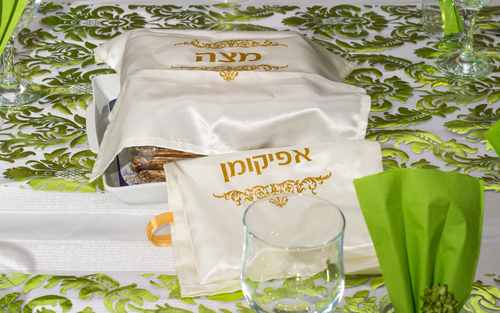

חג הפסח מציין את יציאת בני ישראל מעבדות מצרים לחירות לאחר מכת
בכורות, המכה האחרונה בעשר המכות שניתנו למצרים.
במכה זו מתו כל בכורי מצרים- בני ובנות, ילדים ומבוגרים.
בעקבות מכה זו פרעה שילח את בני ישראל מארצו.
תחילה שבני ישראל נכנסו למצרים היה להם טוב אבל בהמשך מגיעות אליהם שנות רעב ושעבוד.
שנים אלה מביאות את העם למצב של מחנק ורצון
לברוח מהמצב הזה ומשלטונו של פרעה.
שלטונו של פרעה מרחיק את עם ישראל איש מרעהו, מרעיב אותם, מעביד
אותם בפרך, בית סוהר אמיתי.
נקודת השיא של חג הפסח הוא ליל הסדר.
אנו חוגגים בו את הנקודה החשובה ביותר בחיי עם ישראל, לידת העם מחדש.
בליל הסדר אנו קוראים הגדה אשר מרכז ההגדה הוא סיפור יציאת מצרים
ומטרתו היא שנחזור ונספר את סיפור יציאת מצרים מדי שנה בשולחן.
חג הפסח מספר את מעברו של עם ישראל מעם של עבדות ועינויים שמהם
סבל במצרים לעם חירות.

חג הפסח
יום רביעי, י"ד בניסן ה'תש"פ, 8 באפריל 2020
"וַאֲמַרְתֶּם זֶבַח פֶּסַח הוּא לַה' אֲשֶׁר פָּסַח עַל בָּתֵּי בְנֵי
ישְׂרָאֵל בְּמִצְרַיִם בְּנָגְפּוֹ אֶת מִצְרַיִם וְאֶת בָּתֵּינוּ הִצִּיל"
(ספר שמות, פרק י"ב, פסוק כ"ז)
חג הפסח הוא החג היהודי הראשון מבין שלושת הרגלים (חגים שבהם מצווה מהתורה לעלות לרגל לבית המקדש בירושלים). פסח נחגג שבעה ימים, מט"ו בניסן ועד כ"א בניסן. היום הראשון והיום האחרון הם ימים טובים (תאריכים בלוח השנה היהודי שבו קבעה התורה חג ואסרה על קיום מלאכה כמו בימי שבת) והימים שביניהם מכונים חול המועד(מועדים שבהם לא ציוותה התורה לקיים יום טוב).
שמו של החג נובע מהפסוק: "וַאֲמַרְתֶּם זֶבַח פֶּסַח הוּא לַה' אֲשֶׁר פָּסַח עַל בָּתֵּי בְנֵי יִשְׂרָאֵל בְּמִצְרַיִם בְּנָגְפּוֹ אֶת מִצְרַיִם וְאֶת בָּתֵּינוּ הִצִּיל" (ספר שמות, פרק י"ב, פסוק כ"ז). חג הפסח נקרא כך מכיוון שבמכת בכורות הקב"ה פסח (דילג) על בתי בני ישראל.
חג המצות- נקרא כך על שם המצות הנאכלות במשך כל ימי החג ומזכירות לנו את "לחם העוני" אשר אכלו עם ישראל בצאתם ממצרים.
חג החרות- נקרא כך משום שבני ישראל יצאו מעבדות לחרות.
חג האביב- נקרא כך מכיוון שחל בעונת האביב.
הגעלת כלים
כלי האוכל בהם משתמשים ביום יום עוברים צחצוח והרתחה. בהרבה בתים יהודיים ישנה מערכת כלי פסח מיוחדת המאוחסנת במשך השנה ומשתמשים בה רק בפסח.
ביעור חמץ
ניקיון של כל שרידי החמץ וכל פירורי מאפה בבית.
החמץ הנמצא מובא לשרפה בבוקר של ערב פסח.
 חמץ
חמץ
קמח או מאפה שהחמיץ ותפח. בחג הפסח לא אוכלים חמץ לזכר הבצק שלא החמיץ בחיפזון ביציאה ממצרים.
מצות
מאפה מקמח שלא החמיץ או תפח אותו נהוג לאכול בפסח במקום החמץ.
ליל הסדר
מתקיים בלילה הראשון של החג, זכר לליל השימורים ביציאת מצרים.
יושבים סביב שולחן ערוך ומספרים את סיפור יציאת מצריים- מעבדות לחירות.
הגדה של פסח
קובץ מדרשי חז"ל, קטעים מן המקרא, ברכות מזמורים ושירים שנערכו כדי לספר ביציאת מצרים בליל הסדר. ההגדה החלה להתעצב בתקופת המשנה לאחר חורבן בית שני. המתכונת המוכרת לנו התעצבה כנראה בתקופת הגאונים (מאה 7 לספירה והלאה).
אפיקומן
המחצית הגדולה של המצה האמצעית משלוש מצות שולחן הסדר. לאחר בציעתה מוחבאת כזכר לצידה שצררו בני ישראל בצאתם ממצרים. יש מניחים את האפיקומן על הכתף להמחיש את זכר יציאת מצרים. נהוג להחביא את האפיקומן שילדי המשפחה יחפשו אותו.

קמחא דפסחא
היא מגבית צדקה מיוחדת הנהוגה לקראת הפסח, במסגרתה אוספים מהתושבים כסף או מזון על מנת לחלק לעניים מצרכים לפסח.
ה'קערה' היא בעצם שלוש המצות המכוסות במפה (גם בין המצות יש להפריד במפיות).
על קערת ה'סדר' מציבים את ששה דברים, בצורה זו:
זרוע
גרגרת של עוף עם מעט בשר עליה, צלויה באש.
היא זכר ל'קרבן-פסח' שהיו מקריבים בזמן בית-המקדש.
אין אוכלים את ה'זרוע'. יש להכין את ה'זרוע' מערב החג.
ביצה
קשה, בקליפתה. זכר ל'קרבן-חגיגה' שהיו מקריבים בזמן בית- המקדש.
אוכלים אותה בתחילת הסעודה.
מרור
עלי חסה ושורש 'חזרת' ('חריין'). המרור נועד להזכיר לנו את מרירות חייהם של אבותינו במצרים ואוכלים אותו במהלך הסדר. כמות המרור המינימלית שיש לאכול היא 'כזית' - 19 גרם. אולם אם אוכלים קלח (שהוא דחוס יותר), דרוש להוסיף עוד 2 גרם, וכן עבור מה שנשאר בין השיניים.
חרוסת
רסק תפוחי-עץ, אגסים ואגוזים טחונים, מתובלים ביין. החרוסת מזכירה את הטיט שבו עבדו אבותינו בפרך. טובלים בה את המרור.
כרפס
עיקרו - מין ירק. אפשר להשתמש בתפוח-אדמה מבושל או בפרוסת בצל. הספרדים נוהגים להשתמש בסלרי עלים. הוא נאכל בתחילת הסדר (פחות מ'כזית'), טבול במי-מלח, כדי להתמיה את הילדים.
חזרת
את ה'חזרת' אוכלים ב'כורך', דהיינו בתוך המצה, זכר למנהגו של הלל הזקן שהיה כורך את המצה והמרור יחדיו.
לפני שנים רבות היה מלך רשע במצרים, פרעה שמו.פרעה העביד את בני ישראל בעבודה קשה מאד. פרעה ציווה להשליך ליאור כל בן זכר שיולד לבני ישראל. ובימים ההם נולד בן לאשה עבריה, יוכבד שמה. לקחה האישה תיבה קטנה, השכיבה בה את בנה ושמה אותה על שפת היאור. והנה בת פרעה ירדה לרחוץ בנהר. ראתה את התיבה ובתוכה תינוק. משתה בת פרעה את התיבה מן המים וקראה לילד משה.
 הכה אלוהים את פרעה וכל מצריים בעשר מכות: דם, צפרדע, כינים, ערוב, דבר, שחין, ברד, ארבה, חושך, מכת בכורות.
המכה העשירית, מכת בכורות הייתה הקשה מכולן. לאחר שבנו הבכור של פרעה מת, פרעה נכנע והסכים לשלוח את בני ישראל. ביום החמישה עשר בחודש ניסן יצאו בני ישראל ממצריים. לא היה להם זמן לאפות לחם ולכן אפו מצות. בני ישראל הלכו במדבר והגיעו עד ים סוף. ליד הים ראו כי המצרים רודפים אחריהם.
הכה אלוהים את פרעה וכל מצריים בעשר מכות: דם, צפרדע, כינים, ערוב, דבר, שחין, ברד, ארבה, חושך, מכת בכורות.
המכה העשירית, מכת בכורות הייתה הקשה מכולן. לאחר שבנו הבכור של פרעה מת, פרעה נכנע והסכים לשלוח את בני ישראל. ביום החמישה עשר בחודש ניסן יצאו בני ישראל ממצריים. לא היה להם זמן לאפות לחם ולכן אפו מצות. בני ישראל הלכו במדבר והגיעו עד ים סוף. ליד הים ראו כי המצרים רודפים אחריהם.
 בני ישראל צעקו לאלוהים שיציל אותם ואז קרה נס: משה הרים את מטהו והים נבקע לשניים. בני ישראל עברו ביבשה ואילו כל חייליו של פרעה טבעו בים. מאז בכל שנה אנו חוגגים בחודש ניסן את חג הפסח. אנו אוכלים מצות וקוראים בהגדה של פסח. לסעודה החגיגית קוראים: ליל הסדר. מצווה גדולה היא לספר לבנים על יציאת מצרים ועל הניסים שעשה אלוהים לבני ישראל במדבר. "והגדת לבנך".
בני ישראל צעקו לאלוהים שיציל אותם ואז קרה נס: משה הרים את מטהו והים נבקע לשניים. בני ישראל עברו ביבשה ואילו כל חייליו של פרעה טבעו בים. מאז בכל שנה אנו חוגגים בחודש ניסן את חג הפסח. אנו אוכלים מצות וקוראים בהגדה של פסח. לסעודה החגיגית קוראים: ליל הסדר. מצווה גדולה היא לספר לבנים על יציאת מצרים ועל הניסים שעשה אלוהים לבני ישראל במדבר. "והגדת לבנך".
במקום הפתי בר (החמץ) שכולנו מכירים, נשתמש בעוגיות מצה עשירה.
15 דק'
כל אחד יכול
כשר חלבי
-
מצרכים
- 250 גרם עוגיות מצה עשירה
- 150 גרם שוקולד מריר
- רבע כוס חלב
- כף סוכר
- 50 גרם חמאה
- קוקוס או סוכריות צבעוניות לקישוט
-
אופן ההכנה
- טוחנים את עוגיות המצה העשירה במעבד מזון.
- שמים את השוקולד, החלב, הסוכר והחמאה בקערה, ומכניסים למיקרו ל-30 שניות.
- מערבבים ומכניסים ל-30 שניות נוספות - כך עד שמתקבלת עיסת שוקולד הומוגנית.
- מערבבים את העוגיות הטחונות עם השוקולד ומכניסים למקרר לצינון קצר (כחצי שעה).
- יוצרים כדורים ומגלגלים אותם בתוך קערת קוקוס. מעבירים למנז'טים ושומרים במקרר.